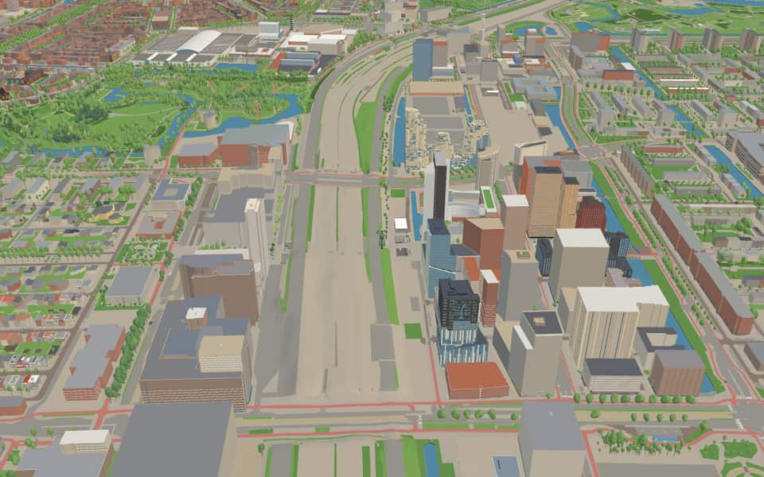
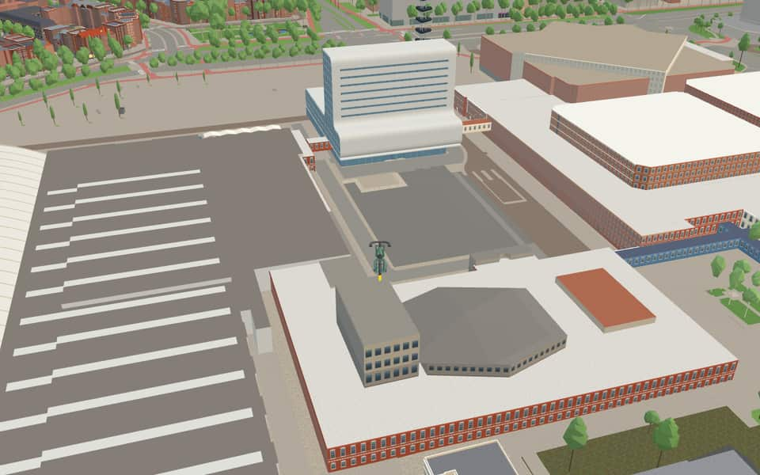
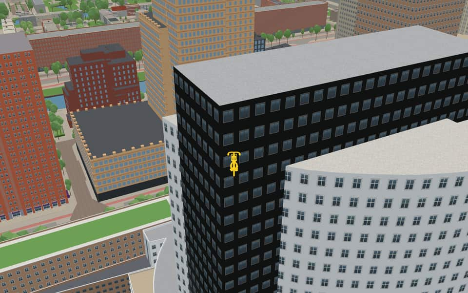
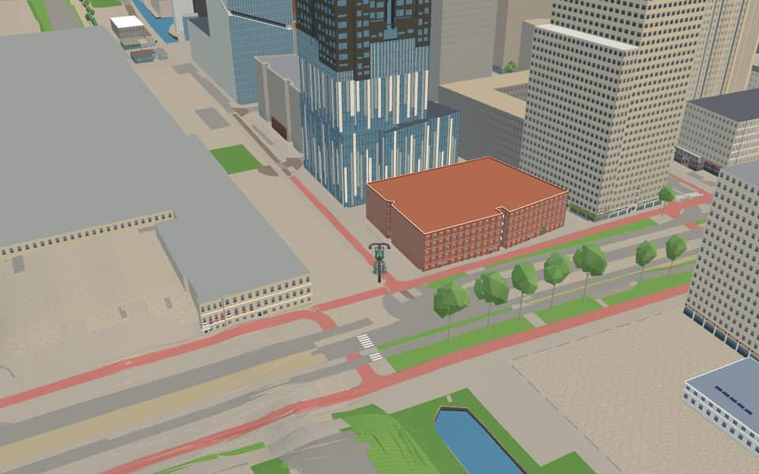

Quarter · Amsterdam
Zuidas
The Zuidas (literally South Axis in Dutch) is a business district and residential neighbourhood in Amsterdam, Netherlands, in the borough of Amsterdam-Zuid. Also known as the "Financial Mile," it lies along the southern sector of the A10 ring road, between Oud-Zuid and the Rivierenbuurt to the north and the garden suburb of Buitenveldert to the south. en.wikipedia.org


In the game
Frames from a ride through Zuidas.




6 more photos of Zuidas

.jpg){kind=link}


.jpg){kind=link}


.jpg){kind=link}


Built here
Buildings modelled one by one for the ride.
RAI Amsterdam
Symphony
The Rock
- No picture yet
Valley
- No picture yet
Viñoly
- No picture yet
Gerrit Rietveld Academie and Sandberg Instituut, Fred. Roeskestraat 96-98, Amsterdam
A 2006 art-school complex, a ten-storey tower clad in dark grey pressed-metal dimples with three long ribbon windows over a glazed ground storey, beside a two-storey low block whose upper storey is a white expanded-metal screen between white slab edges over a glazed ground
- No picture yet
Gerrit Rietveld Academie, the Rietveld building (1967, Gerrit Rietveld with J. van Dillen and J. van Tricht), Fred. Roeskestraat 96
A four-storey glass box on a low dark plinth, a fully glazed curtain wall of square grey modules where every floor is a clear vision band between frosted spandrel bands, beside a low workshop wing with saw-tooth roofs
Did you know
Trivia the ride can show you here.
- The World Trade Center opened here in 1985; the city adopted its Zuidas masterplan in 1998. Wikipedia
- Zuidas is known as the 'Financial Mile'. The Amsterdamsche Football Club, founded in 1895 and one of the oldest football clubs in the Netherlands, plays here at Sportpark Goed Genoeg. Wikipedia
- ACTAACTA was founded in 1985 to merge two separate faculties due to a national oversupply of dentists. nl.wikipedia.org
- ACTABy 2010, the site housed roughly nine hundred students alongside twenty-seven thousand patients. nl.wikipedia.org
- AFCThe club was officially established on January 18, 1895. en.wikipedia.org
- AFCMembers chose the name Amsterdamsche Football Club (AFC) after lengthy debate. en.wikipedia.org
- AFCAFC won its first championship in 1906 and has claimed the title fourteen times since. en.wikipedia.org
- Amstel AcademieThe institution began in 1961 as a nursing school to train nurses for the VU Hospital. nl.wikipedia.org
- Amstel AcademieIn 2005, the academy relocated from Uilenstede to the OZW building on De Boelelaan. nl.wikipedia.org
- Amstel AcademieThe academy operates as part of a larger Institute for Education and Training alongside two other VUmc schools. nl.wikipedia.org
- Gerrit Rietveld AcademieThe school was renamed in 1968 to honor architect Gerrit Rietveld after his building opened. en.wikipedia.org
- Gerrit Rietveld AcademieDirector Mart Stam infused the curriculum with De Stijl and Bauhaus ideas between 1939 and 1960. en.wikipedia.org
- Gerrit Rietveld AcademieA new campus designed by Benthem Crouwel Architects was completed in 2003. en.wikipedia.org
- Gerrit Rietveld AcademieThe institution was established in the year 1924. en.wikipedia.org
45 more facts
- Vrije Universiteit AmsterdamVrije Universiteit Amsterdam means 'Free University' to show independence from government and church. en.wikipedia.org
- Vrije Universiteit AmsterdamTeaching began in 1880 inside rented rooms at the Scottish Missionary Church along the Amstel river. en.wikipedia.org
- Vrije Universiteit AmsterdamProfessor Andrew S. Tanenbaum created MINIX, the operating system that inspired Linux. en.wikipedia.org
- Vrije Universiteit AmsterdamComputer scientist Henri Bal and student John Romein wrote a program that solves the ancient game of Oware. en.wikipedia.org
- Prinses AmaliapleinPrincess Amalia was chosen because nearby streets honor other royal family members. nl.wikipedia.org
- Prinses AmaliapleinA planned park named Prinses Amaliapark was cancelled before the square received its name. nl.wikipedia.org
- Prinses AmaliapleinA major redesign took place in 2018 and 2019 after neighborhood consultation. nl.wikipedia.org
- ZuidpleinTram 5 used this square as an end loop until the line extended to Amstelveen in 1990. nl.wikipedia.org
- ZuidpleinA large, free underground bicycle parking garage sits directly beneath the square. nl.wikipedia.org
- ZuidpleinTram lines 5 and 25 stop on the north side along Strawinskylaan. nl.wikipedia.org
- BeatrixparkDuring World War II, the park temporarily bore the name Diepenbrockpark from 1942 to 1945. en.wikipedia.org
- BeatrixparkUnemployed workers built the park as a public works project to provide employment. en.wikipedia.org
- BeatrixparkDutch architect Jakoba Mulder designed the oldest section of this city park. en.wikipedia.org
- BeatrixparkIn 1972, this site hosted a major garden and agricultural exhibition known as Floriade. en.wikipedia.org
- Botanical Garden ZuidasThe garden survived a 2010 public protest that saved it from hospital expansion plans. en.wikipedia.org
- Botanical Garden ZuidasBotanical Garden Zuidas adopted its current name in 2016 to reflect the surrounding district. en.wikipedia.org
- Botanical Garden ZuidasAbout one thousand square metres of the site are occupied by glass-houses within the hectare. en.wikipedia.org
- Lex van DeldenbrugLow railings allow the structure to function as a bench for people sitting on its edge. nl.wikipedia.org
- BoerenweteringThe ditch was widened after the Amsteldijk was built to drain sinking polder land further north. nl.wikipedia.org
- StadiongrachtThe northern section now runs dry because it lost its direct water connection to the Noorder Amstel Canal. nl.wikipedia.org
- StadiongrachtA small lock exists here but no longer functions as one since water levels are identical on both sides. nl.wikipedia.org
- StadiongrachtThe canal's name does not appear in postal codes, while its quays carry distinct names like Afroditekade. nl.wikipedia.org
- Zuider AmstelkanaalThe canal is absent from postcode books because its quays and streets have mismatched names. nl.wikipedia.org
- Zuider AmstelkanaalTram lines 5 and 24 cross the canal on two of its eight bridges. nl.wikipedia.org
- BeethovenstraatTrendy restaurants and bars have opened here in increasing numbers since the coronavirus crisis. nl.wikipedia.org
- BeethovenstraatBridge 417 allowed the street to cross the Zuider Amstel Canal in 1939 or 1940. nl.wikipedia.org
- BeethovenstraatActress Fien de la Mar lived here before jumping from a two-meter window in 1965. nl.wikipedia.org
- BuitenveldertselaanConstruction occurred during the 1960s along the Parnassusweg near a former dike body. nl.wikipedia.org
- BuitenveldertselaanZuidas development shortened the street's northern end in 2015 to start south of De Boelelaan. nl.wikipedia.org
- BuitenveldertselaanCrossing the municipal boundary near Kalfjeslaan, the road continues as Beneluxbaan in Amstelveen. nl.wikipedia.org
- BuitenveldertselaanArchitects Zeeger Gulden and Ger Husslage created the buildings at house numbers 78 through 84. nl.wikipedia.org
- De BoelelaanThe road gained importance after the VU medical center arrived on its south side in 1957 or 1958. nl.wikipedia.org
- De BoelelaanGarden town Buitenveldert was constructed along the southern stretch during the 1960s. nl.wikipedia.org
- De BoelelaanA connection called Lex van Deldenbrug linked De Boelelaan to George Gershwinplein between 2012 and 2013. nl.wikipedia.org
- De BoelelaanThe tower at number 2 opened as the Esso Motor Hotel in 1969 before becoming a refugee shelter in 2022. nl.wikipedia.org
- EuropaboulevardThe nhow Amsterdam RAI hotel opened on the west side in 2019, followed by the Terrace Tower in 2020. nl.wikipedia.org
- EuropaboulevardWhile the naming occurred in 1958, the specific section in Buitenveldert received its name in 1961. nl.wikipedia.org
- EuropapleinTram line 4 operated its terminus here starting in 1948, replacing an earlier route from 1936. nl.wikipedia.org
- EuropapleinAfter reopening in 2011, the square features the Festive series of sculptures by Guillaume Bijl. nl.wikipedia.org
- IJsbaanpadThe road was named IJsbaanpad in 1949 after the nearby ice club field submerged in winter. nl.wikipedia.org
- IJsbaanpadThe former site of the ice club is now occupied by tennis courts. nl.wikipedia.org
- IJsbaanpadBridge 999, the white Post-Print Happiness Bridge, has connected the street to the Olympic Stadium since 2009. nl.wikipedia.org
- ParnassuswegIn the 1950s, the road was extended toward Buitenveldert to reach the A10 ring road. nl.wikipedia.org
- ParnassuswegSince 1972, the road has been raised to create a highway-like appearance with lower paths for cyclists and pedestrians. nl.wikipedia.org
- ParnassuswegTram line 5 began operating on the southern section of the street in 2008. nl.wikipedia.org
Names on the map
Where the canal, bridge and street names come from.
Canals and water
- BoerenweteringThe name of the watercourse that originally ran from the Kalfjeslaan to what is now the Koningsplein. It was formerly also called the Oude Wetering, as opposed to the Nieuwe Wetering (Kostverlorenvaart). The Weteringbuurt and the Weteringschans take their names from this wetering (drainage canal).
- De BoelegrachtGerrit de Boele, bailiff of Amstelland and Waterland (1354/55).
- StadiongrachtRefers to the neighbouring Olympic Stadium.
- Zuider AmstelkanaalThe southern part of the Amstelkanaal, referring to the river Amstel.
2 other canals without a recorded story
Buitenveldertsegracht · RAI-haven
Bridges
- KunstbrugBridge 1987: a bridge for cyclists, dated 1998 in the city's bridge register.
- Lex van DeldenbrugAlexander Zwaap (1919-1988), composer. Van Delden was the name he used from his time in hiding and in the resistance. In 1982 he received the City of Amsterdam's Pin of Merit.Bridge 808: a reinforced concrete bridge for cyclists, dated 2014 in the city's bridge register.
Streets
- Aaron CoplandstraatAmerican composer (1900-1990). He composed symphonies, ballets, film music and an opera ('The tender land'). He promoted American music through publicity and lectures.
- AmstelveensewegVillage. Before 1 January 1964 the municipality was called Nieuwer-Amstel. Before it was widened in 1898, the stretch of the road along the Vondelpark as far as the Overtoom was called Dubbele Buurt.
- Antonio VivaldistraatItalian composer (1678-1741). From 1703 to 1740 he was attached to the Conservatorio dell'Ospedale della Pietà, one of the four famous music schools in Venice. Vivaldi's great importance as a composer lies in the development of the violin concerto. His most famous work is 'Le quattro stagioni' (The Four Seasons), published in Amsterdam in 1725.
- Arent Janszoon ErnststraatArent Janszoon Ernst van Bassen, bailiff of Amstelland from 1569 to 1573.
- Arnold SchönberglaanAmerican composer of Austrian origin (1874-1951). With his atonal compositions he broke with traditional harmony and its application. Together with his pupils Alban Berg and Anton Webern he formed the so-called Second Viennese School, which marks a turning point in the history of music.
- Barbara StrozzilaanItalian composer (1619-1677), adopted daughter of the poet Giulio Strozzi. She studied music with Francesco Cavalli, the leading opera composer of his day. She wrote more than a hundred vocal works, including madrigals, cantatas, arias and duets.
- BeethovenpleinLudwig van Beethoven (1770-1827), German composer and grand master of instrumental music. His works include 9 symphonies, 32 piano sonatas, 11 overtures and 17 string quartets.
- BeethovenstraatLudwig van Beethoven (1770-1827), German composer and grand master of instrumental music. His works include 9 symphonies, 32 piano sonatas, 11 overtures and 17 string quartets.
- Benjamin BrittenstraatLord Edward Benjamin Britten (1913-1976), English composer and pianist. He was one of the most important classical composers of the twentieth century. His works include the opera 'Peter Grimes' and the 'War Requiem'.
- BoerenweteringpadThe name of the watercourse that originally ran from the Kalfjeslaan to what is now the Koningsplein. It was formerly also called the Oude Wetering, as opposed to the Nieuwe Wetering (Kostverlorenvaart). The Weteringbuurt and the Weteringschans take their names from this wetering (drainage canal).
- BuitenveldertselaanNamed after the Binnendijksche Buitenveldersche polder, originally a landscape of meadows and market gardens.
- Christian NeefestraatChristian Gottlob Neefe (1748-1798), German opera composer and conductor. Court organist in Bonn and, from 1779, teacher of Ludwig van Beethoven.
39 more streets with a story
- Clara SchumannstraatClara Schumann (1819-1896), German composer and pianist.
- Claude DebussylaanClaude Achille Debussy (1862-1918), French composer and an innovator in classical music. He was inspired by his travels to Beirut and by Javanese music. With his own distinctive combinations of sounds and harmonies, he wrote many works for piano and orchestra, chamber music and vocal music.
- De BoelelaanGerrit de Boele, bailiff of Amstelland and Waterland (1354/55).
- De Groene ZoomNamed after its layout, a strip of park with paths (the green edge).
- De KlenckeA moated country house from around 1740 in Oosterhesselen (Drenthe). Another havezate (a manor with noble rights) stood here earlier, of which a wall-anchor date of 1670 and a tombstone from 1635 remain.
- Domenico ScarlattilaanItalian composer (1685-1757), choirmaster in Rome and harpsichordist at the Spanish court, who composed more than five hundred works for keyboard.
- Eduard van BeinumstraatEduard A. van Beinum (1901-1959), conductor of the Concertgebouw Orchestra from 1945 until his death, and also of the London Philharmonic Orchestra from 1949 to 1952.
- EuropaboulevardNamed after the continent. The naming followed the resolution of the Consultative Assembly of the Council of Europe of 29 December 1957, which called on every municipality in Europe to give a square or street the name Europe, to help promote the idea of European unity. With this naming the name Westerscheldeplein (council decision of 30 January 1935) and the name Scheldestraat for part of that street (council decision of 16 February 1927) were abolished.
- EuropapleinNamed after the continent. The naming followed the resolution of the Consultative Assembly of the Council of Europe of 29 December 1957, which called on every municipality in Europe to give a square or street the name Europe, to help promote the idea of European unity. With this naming the name Westerscheldeplein (council decision of 30 January 1935) and the name Scheldestraat for part of that street (council decision of 16 February 1927) were abolished.
- Fanny MendelssohnstraatFanny Mendelssohn was a German composer and pianist.
- Fred. RoeskestraatFrederik J. Roeske (1868-1961), conductor of the Royal Male Choir Apollo from 1891 to 1953, and also composer of music for a great many songs. Before it got this name, the street was part of the Prinses Irenestraat.
- George GershwinlaanAmerican composer and pianist (1898-1937) who worked jazz elements into classical music. He wrote the opera 'Porgy and Bess' and countless musicals, as well as piano works, orchestral works and concertos.
- George GershwinpleinAmerican composer and pianist (1898-1990) who worked jazz elements into classical music. He wrote the opera 'Porgy and Bess' and countless musicals, as well as piano works, orchestral works and concertos.
- Gustav MahlerlaanAustrian composer and conductor (1860-1911), one of the most important conductors of his time. His compositions linked late Romanticism with the modern period of classical music. Mahler had a special bond with Amsterdam, which he first visited in 1903 at the invitation of Willem Mengelberg, conductor of the Concertgebouw Orchestra. That visit began a close relationship between the orchestra and the composer.
- Gustav MahlerpleinAustrian composer and conductor (1860-1911), one of the most important conductors of his time. His compositions linked late Romanticism with the modern period of classical music. Mahler had a special bond with Amsterdam, which he first visited in 1903 at the invitation of Willem Mengelberg, conductor of the Concertgebouw Orchestra. That visit began a close relationship between the orchestra and the composer.
- Hildegard von BingenstraatHildegard von Bingen was a German composer, but also a scientist (cosmology, botany), abbess and philosopher.
- IJsbaanpadNamed after the ice rink on the IJsclub grounds, to which the road leads.
- JaddanbaikadeJaddanbai was an Indian classical composer who, besides composing, also had talents for singing, dancing, acting and film production.
- Leo SmitstraatDutch composer of Portuguese-Jewish descent (1900-1943), who studied at the Amsterdam Conservatory. He left a small but rich body of work, influenced by Ravel and Stravinsky. On 27 April 1943 he was put on a transport to the Sobibor extermination camp, where he was murdered on 30 April.
- Leonard BernsteinstraatAmerican conductor and composer (1917-1989), who became famous for his musicals, among them 'West Side Story'. He also composed operas, symphonies and concertos, and conducted all the great orchestras of the world.
- Majoie HajarystraatMajoie Hajary (Paramaribo, 16 August 1921 - Neuilly-sur-Seine, 25 August 2017) was a composer from a multicultural family, who won fame with music that conveyed, among other things, the value of a diverse society.
- Maurice RavellaanJoseph Maurice Ravel (1875-1937), French composer, conductor and pianist of Swiss and Basque descent. With his contemporary Claude Debussy (1862-1918) he is seen as the leading impressionist composer. His most famous work is the ballet 'Boléro' (1928).
- Nadia en Lili BoulangerplantsoenNadia (Paris, 16 September 1887 - Paris, 22 October 1979) and Lili (Paris, 1893 - Mézy-sur-Seine, 1918) Boulanger were sisters and both composers. They meant a great deal to classical music in the early twentieth century, known above all in their native France but eventually abroad too. Nadia Boulanger's musical work is closely linked with the American Conservatory at Fontainebleau, which she directed from 1949 until the end of her life, training more than 600 pupils. Lili Boulanger was the first woman to win the Prix de Rome. After that she was constantly ill, and died aged only 24.
- OldenallerA country house near Nijkerk (Gelderland), built in 1655 probably to a design by Jacob van Campen, on the site of an earlier castle. It was remodelled around 1850 by K.G. Zocher.
- ParnassuswegA mountain in Greece, in Greek mythology the home of Apollo and the Muses. Today used figuratively for the realm of poetry.
- Peter SchatstraatComposer (1935-2003) of operas and orchestral and choral works, regarded as the greatest talent of his generation for the development of Dutch music. In 1973 he received the prestigious Matthijs Vermeulen Prize.
- PramenpadA small flat-bottomed inland boat (a pram), used mainly for carrying livestock and manure.
- Prinses AmaliapleinCatharina-Amalia Beatrix Carmen Victoria of Orange-Nassau (born 7 December 2003), heir apparent with the title Princess of Orange, Princess of the Netherlands, Princess of Orange-Nassau, eldest daughter of King Willem-Alexander and Queen Máxima. She is known as Amalia.
- Prinses IrenestraatIrene Emma Elisabeth, second daughter of Princess Juliana and Prince Bernhard, born 5 August 1939. In 1964 in Rome she married the French nobleman Prince Carlos Hugo of Bourbon-Parma. For traffic reasons the western part of the Prinses Irenestraat was renamed Fred. Roeskestraat by council decision of 27 April 1977.
- RooseveltlaanFranklin Delano Roosevelt (1882-1945), president of the United States from 1933, of a Dutch family that emigrated to America in 1649. Partly through his fierce opposition to American neutrality, he had a large share in the Allied victory in the Second World War. When the street was laid out it was named Zuider Amstellaan (council decision of 22 March 1922).
- Rosy WertheimstraatComposer (1888-1949), whose compositions show the influence of Stravinsky and Debussy, among others.
- ScheldepleinThe river (Scheldt) that rises in France, enters the Netherlands beyond Antwerp and then flows into the sea through the Westerschelde.
- StrawinskylaanIgor Stravinsky (1882-1971), Russian-born American conductor and composer of operas and ballet music, among them 'The Rite of Spring'.
- StrawinskypadIgor Stravinsky (1882-1971), Russian-born American conductor and composer of operas and ballet music, among them 'The Rite of Spring'.
- Tommaso AlbinonistraatItalian composer (1671-1750), probably self-taught, who worked as chamber musician to Ferdinando Carlo, Duke of Mantua. Johann Sebastian Bach three times took themes by Albinoni as the starting point for his own compositions. Albinoni wrote instrumental works and some fifty operas.
- Van der BoechorststraatLord Floris van der Boechorst, bailiff of Amstelland and Waterland from 1340 to 1347.
- WielingenstraatThe channel in the mouth of the Westerschelde.
- Willem van WeldammelaanBailiff of Amstelland and Waterland from 1392 to 1395.
- ZuidpleinThe Zuidplein takes its name from its position by Station Zuid and its location in the city. The square is an important hub in Amsterdam-Zuid and is linked by the metro line to Noord and the Noordplein there.
7 other streets without a recorded story
Ambulanceingang VUmc · Gustav Mahlerplein Zuid · Kiss and Ride · Kunstbrug · Maria Antonia Walpurgislaan · Mathijs Vermeulenpad · Rai Parking 9-10